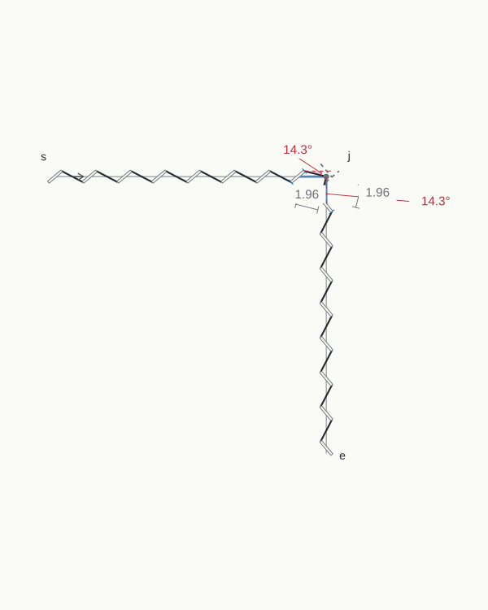
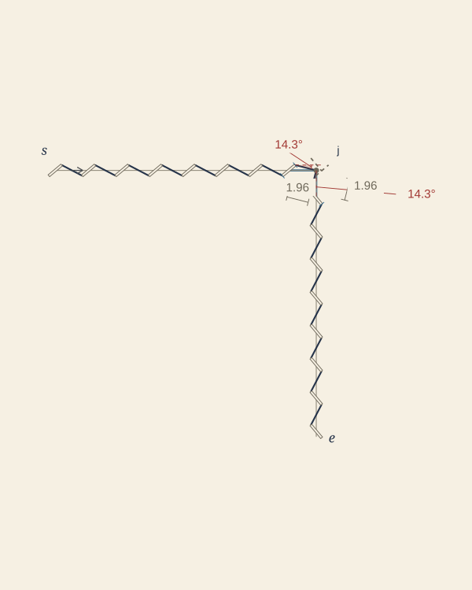
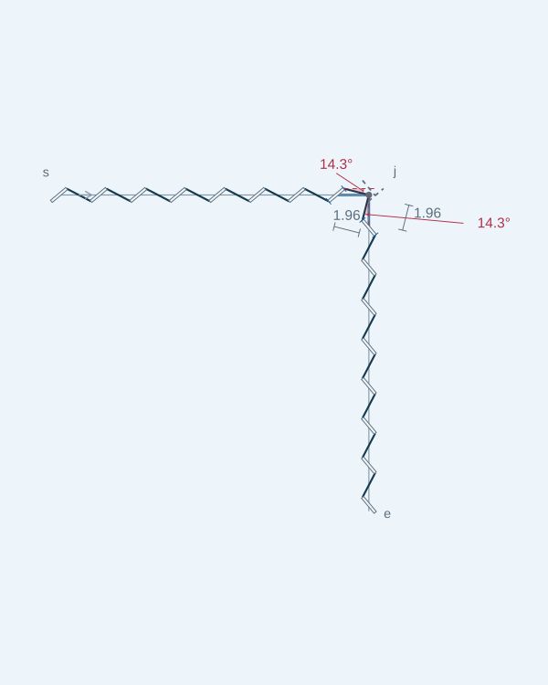
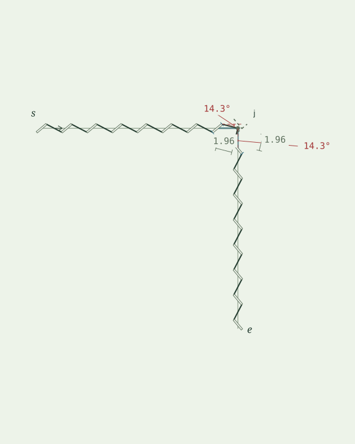
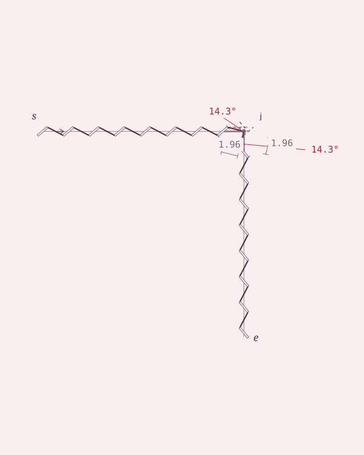
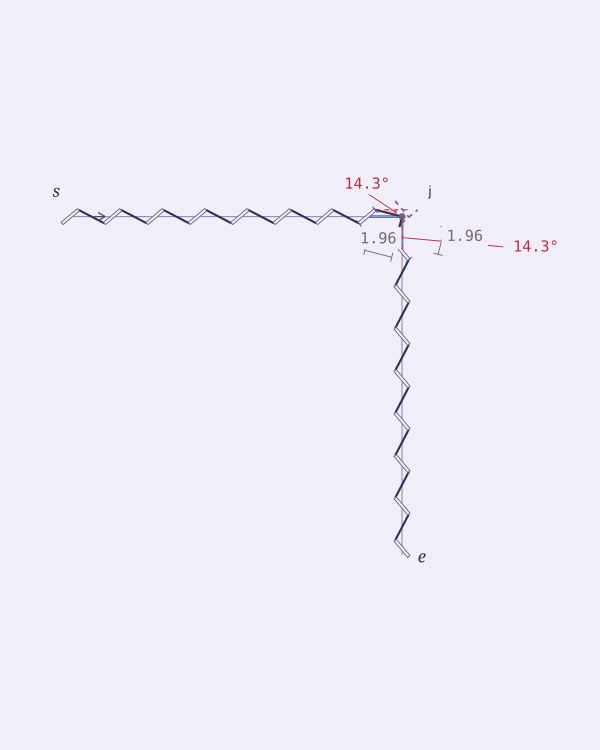
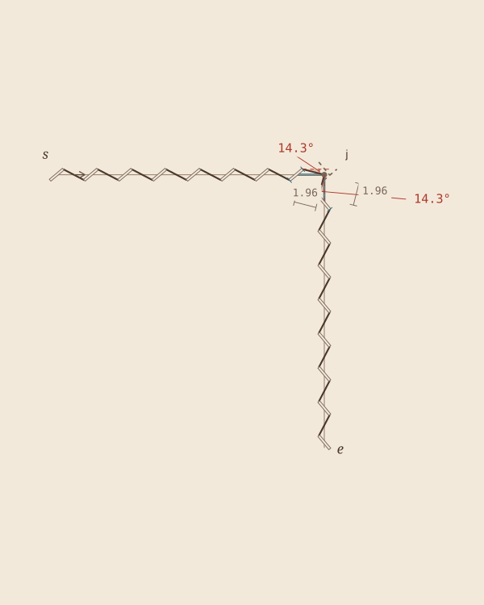
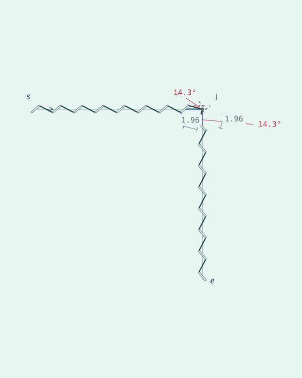

01 / Porcelain
backgroundinksecondaryguideangleadjusted

02 / Ivory & ink
backgroundinksecondaryguideangleadjusted

03 / Glacier
backgroundinksecondaryguideangleadjusted

04 / Sage paper
backgroundinksecondaryguideangleadjusted

05 / Rose quartz
backgroundinksecondaryguideangleadjusted

06 / Lilac mist
backgroundinksecondaryguideangleadjusted

07 / Linen
backgroundinksecondaryguideangleadjusted

08 / Mint porcelain
backgroundinksecondaryguideangleadjusted